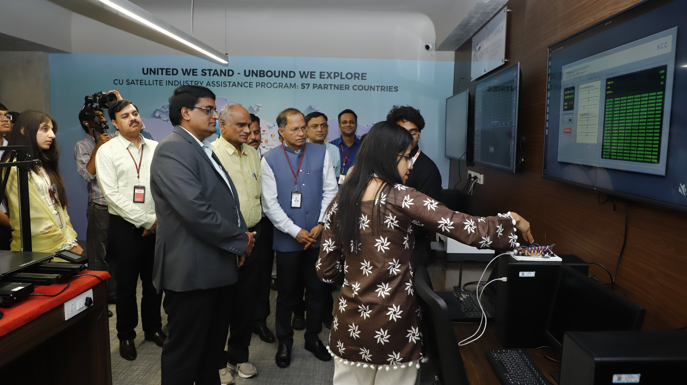
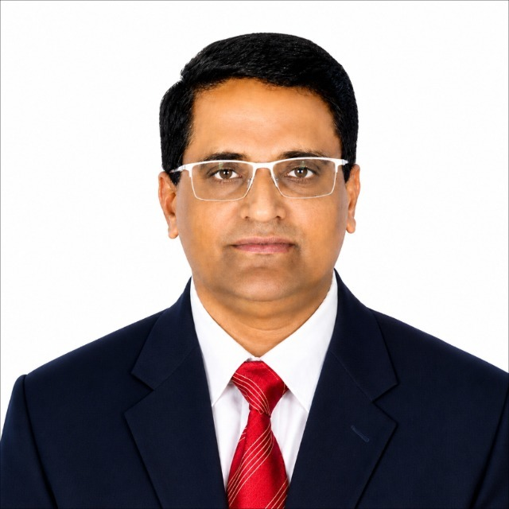
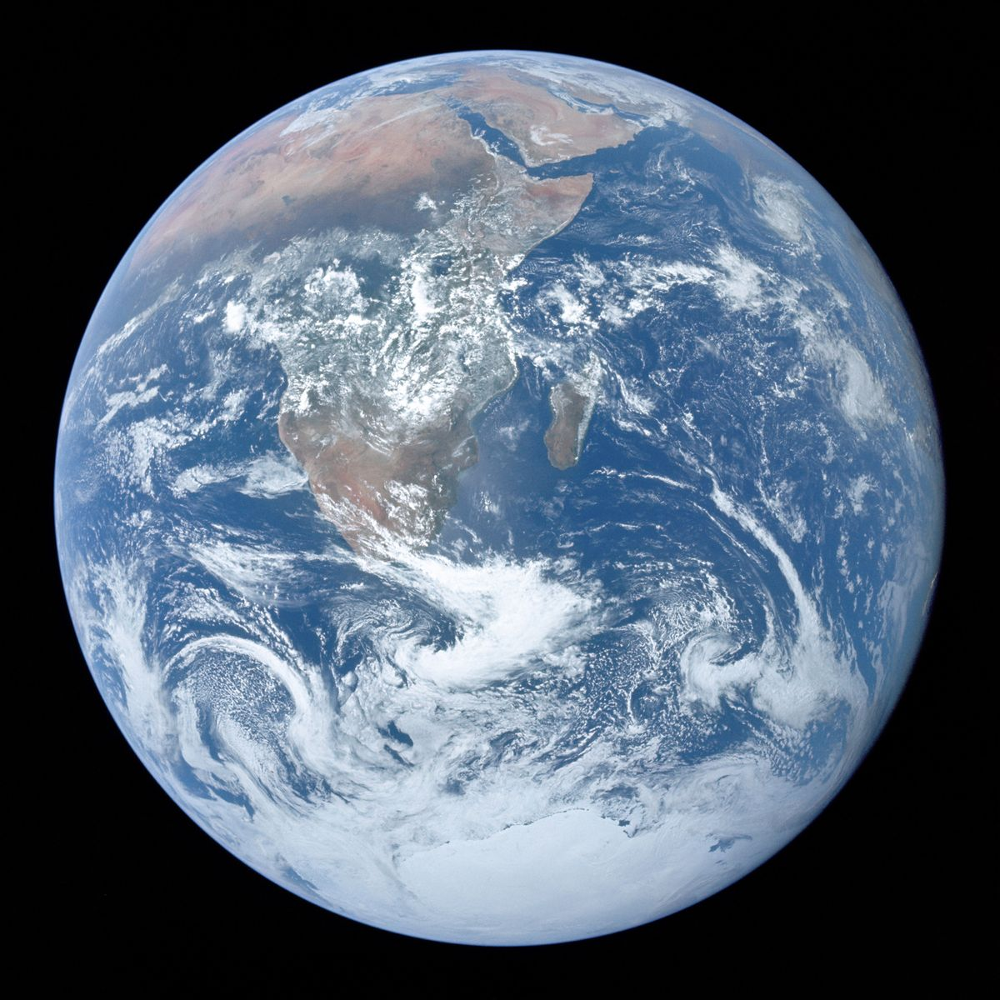
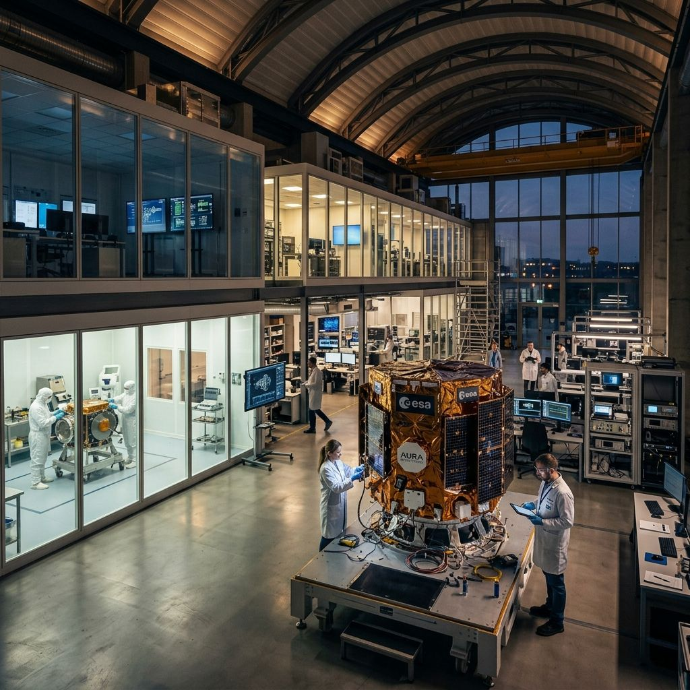
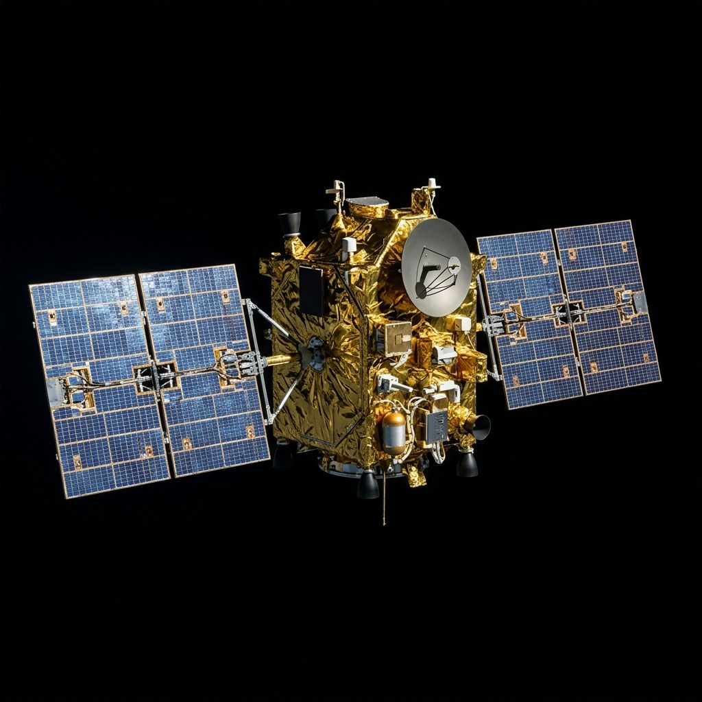
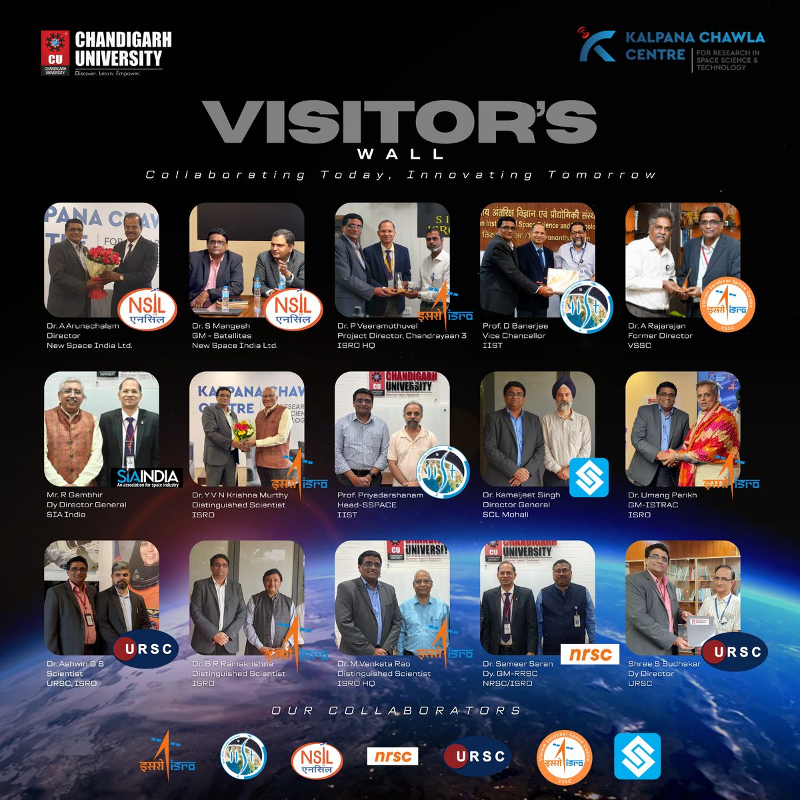

Jul 12, 2026
SatNOGS Network Integration Complete
Our ground station is now fully integrated with the global SatNOGS network, allowing continuous tracking of LEO satellites.
Read full report →Chandigarh University · Gharuan, Punjab 30.77°N 76.57°E
North India's first university space-research centre — where students operate a live satellite ground station wired into a global open network, and learn to read the sky from first principles.
News & Updates
Our ground station is now fully integrated with the global SatNOGS network, allowing continuous tracking of LEO satellites.
Read full report →The 25-day flagship internship concluded with Dr. M. Nageswara Rao (ISRO) as Chief Guest, awarding joint IIST certificates to 50 students.
View highlights →Over 150 students participated in our intensive three-day workshop on decoding live satellite telemetry.
View highlights →The KCC team successfully launched and recovered our atmospheric testing payload from an altitude of 32km.
Mission details →About the centre
The Kalpana Chawla Centre for Research in Space Science & Technology (KCC) was inaugurated on 3 January 2022 by the Hon'ble Defence Minister of India, Shri Rajnath Singh — the first centre of its kind in North India. It was built with a simple conviction: students learn space technology by operating it, not by reading about it.
The namesake
“The path from dreams to success does exist. May you have the vision to find it, the courage to get on to it, and the perseverance to follow it.”
Born in Karnal, Haryana, Kalpana Chawla took her aeronautical engineering degree from Punjab Engineering College, Chandigarh — a short drive from this campus — before earning her doctorate in the United States and joining NASA. In 1997, aboard Space Shuttle Columbia on STS-87, she became the first Indian-born woman in space. She flew again on STS-107 in 2003, and was lost with her crew when Columbia broke apart on re-entry — sixteen minutes from home.
The centre carries her name so that the distance from a Punjab classroom to orbit is measured the way she measured it: as a path, not a barrier.
Vision & Mission
VISION: To establish KCC as a globally recognized Centre of Excellence in space science and technology, contributing to cutting-edge research, innovation, and capacity building.
MISSION:
Programs & Collaborations
KCC Summer Internship Programme 2026
A flagship 25-day initiative (15 June – 10 July 2026) that trained 50 students. It delivered 150+ hours of expert lectures and hands-on training, mentored by 15+ distinguished scientists from ISRO, IIST, URSC, VSSC, and other DoS organizations. The valedictory function was graced by Dr. M. Nageswara Rao (ISRO).
Satellite Engineering Boot Camp
Organized in academic collaboration with the Indian Institute of Space Science and Technology (IIST), providing systems engineering exposure and culminating in joint IIST-Chandigarh University certification for all participants.
The centre collaborates with ISRO and other research organizations to bridge academia and industry.

Opportunities
Internships · Live projects · Research exposure · National and international competitions
24x7 operational ground station · Advanced research labs · Global collaborations · Expansion into National Centre for Applied Space Research
A student-driven journey to design, build & launch a satellite. This roadmap outlines our progressive milestones toward the ultimate goal of launching into orbit by 2030.
Completed intensive foundational training for the core team via the Satellite Engineering Boot Camp in collaboration with IIST.
Defining the mission objectives, satellite capabilities and payload specifications.
Expert guidance and review to refine our mission and development path with ISRO Scientists.
Technology demonstration and data collection using high-altitude balloon platform.
Setting up and operating our own ground station for communication & data handling.
Launch onboard SSLV from SHAR to Low Earth Orbit by 2030.
Building knowledge and skills
Solving real-world challenges
Working together for greater impact
Turning ideas into tangible solutions
Reaching new heights
Empowering future space leaders
The centre is guided by experienced faculty and driven by the passion of our student team.

Senior Director
Leading the strategic vision and research initiatives at the Kalpana Chawla Centre.
Academic & Guest Coordination Lead
Oversees technical session coordination and academic quality monitoring.
Secretary to Senior Director
Coordinates official communications, expert invitations, and program operations.
Program Operations Coordinator
Manages student coordination, logistics, and program administration.
Laboratory & IT Infrastructure In-Charge
Ensures laboratory readiness, IT support, and handles media publicity.
Student Technical Coordinator
Final year Mechatronics engineer providing hardware integration and technical support.
Mission log
Defence Minister Rajnath Singh commissions the Rs 3.5-crore centre — ground control station, geospatial centre and space-science labs under one roof.
Organized a 25-day flagship internship training 50 students, featuring a Satellite Engineering Boot Camp with IIST and mentorship from 15+ ISRO scientists.
Expert guidance and review to refine our mission objectives, satellite capabilities, and payload specifications with ISRO Scientists.
Student crews keep the ground station listening — tracking LEO passes, decoding telemetry, and communicating with overhead satellites.




Gallery
KCC belongs to the students of Chandigarh University — every school, every year. Join the team, take a satellite-design course, spend a night at the telescope, or sit a shift at the ground station.